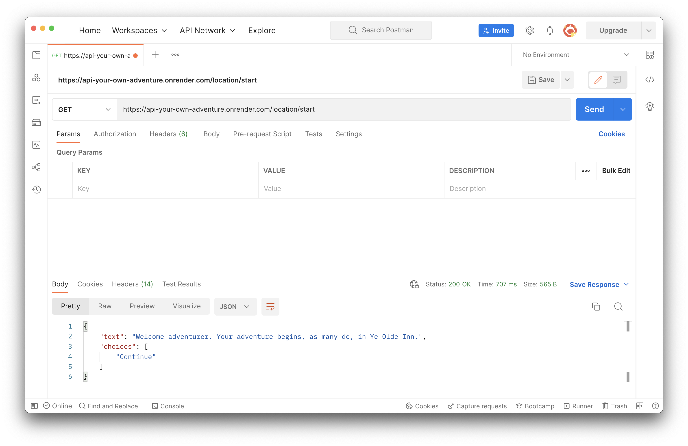

Introduction to APIs
In this session, we are going to:
- Install Postman to interact with an API over HTTP.
- Learn how to send GET and POST requests in Postman
- Learn how to include a body as part of our requests
- Have fun!
The API we will be using is called "API Your Own Adventure".
Installing Postman
Postman is a REST client, it allows us to interact with an API by building HTTP requests. This is very handy when we are building an API, or learning how a new one works. One way to think of it is a web browser that doesn't render the web page. Let's get familiar with it:
- Firstly, download Postman here ↗
- Then, get familiar with using Postman's interface here ↗.
- Lastly, send your first request ↗.
The challenge
Important! ⚠️
All you need for this challenge is Postman.
You don't need to clone or download the following API code locally. The link is provided only as a reference for checking the source code.
Important! ⚠️
We will be using the "API Your own Adventure" API to practice sending
GET and POST requests. The aim is to explore the cave and find the treasure.
To do this, you will need to send a GET request to receive a description of your current location and
available choices, then send a POST request with a choice to the same url. You will then receive the
url for the next part of the story.
When you're ready, send a GET request to
https://api-your-own-adventure.onrender.com/location/start. You should receive this JSON
response:
{
"text":"Welcome adventurer. Your adventure begins, as many do, in Ye Olde Inn.",
"choices":["Continue"]
}

Sending your first POST request
Now we have the first part of the story, we need to build a POST request to move the story forward.
To do this, you will need to:
-
Set the request type next to the url bar as
POST, the url will remain the same. -
Click on the
Bodytab, select therawoption. A dropdown menu will appear to the right, it will be set toTextby default. Set it toJSON. -
We now need to write the request body, you may have guessed that it needs to be in
JSON, it should look something like this:
{
"choice": "YOUR ANSWER HERE"
}
Once that's in place you should be good to send your first POST request.If it worked, you'll get a
response with a goTo property. This will contain the path of the next location. Hit that with a
GET request to find out what's in the next location.
Make a GET request to /location/inn to get the next part of the story. You now have all
the skills you need to explore the cave and find the treasure.
Found the treasure?
When you find the treasure room, the response will include a base64 encoded string.
You can use this website to decode it. Be the first team to post the decoded string in slack and win the game!